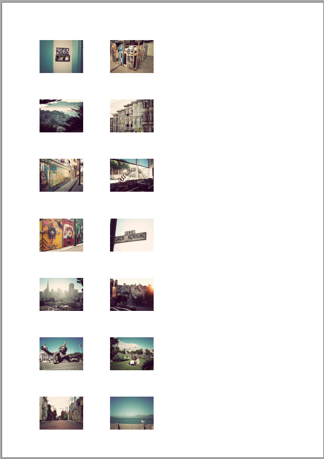

Creating StackFlow
Brief
The article describes how to create StackFlow.
Details
StackFlow is a range of content items, going one by one.
To add a StackFlow to a Section:
Call the AddStackFlow method of the StackFlowBuilder class.
This method adds stackflow to Section's content getting items and orientation from the parameters:
section.AddStackFlow(orientation, listOfItems);
OR call another AddStackFlow method, which allows you to add stackflow and to configure it using Action.
Then you can set stackflow's
Width and Height (in XUnits),
Orientation (Default, Horizontal or Vertical),
Spacing (left, right, top, bottom space from stackflow item)
and Content.
See also:
Example
Creating Horizontal StackFlow [hide]
//Let's say we have 15 images in the images subfolder of the project:
var images = new Image[15];
for (var i = 1; i <= images.Length; i++)
{
images[i - 1] = new Image().SetWidth(80).SetHeight(60).SetScale(ScalingMode.Normal).SetHref(Path.Combine(ProjectDir, "images", i + ".jpg"));
}
//Add StackFlow to the section:
section.AddStackFlow(StackFlowOrientation.Horizontal, images);
The code above will generate the following:
Example
Creating Vertical StackFlow [hide]
//Let's say we have 15 images in the images subfolder of the project:
var images = new Image[15];
for (var i = 1; i <= images.Length; i++)
{
images[i - 1] = new Image
{
Width = 200,
Height = 174.75f,
Scale = ScalingMode.Normal,
ImageFile ={Href =new Uri(Path.Combine(ProjectDir, "images", i + ".jpg"))}
};
}
//Add StackFlow to the section:
section.AddStackFlow(StackFlowOrientation.Vertical, images);
Example
Setting spacing and width: [hide]
var images = new Image[15];
for (var i = 1; i <= images.Length; i++)
{
images[i - 1] = new Image().SetWidth(80).SetHeight(60).SetScale(ScalingMode.Normal).SetHref(Path.Combine(ProjectDir, "images", i + ".jpg"));
}
var stackflow = section.AddStackFlow(StackFlowOrientation.Horizontal, images);
//Settings:
stackflow.Spacing = new Models.Shared.Box(50, 50, 50, 50);
stackflow.Width = 400;
The code above will generate the following:
